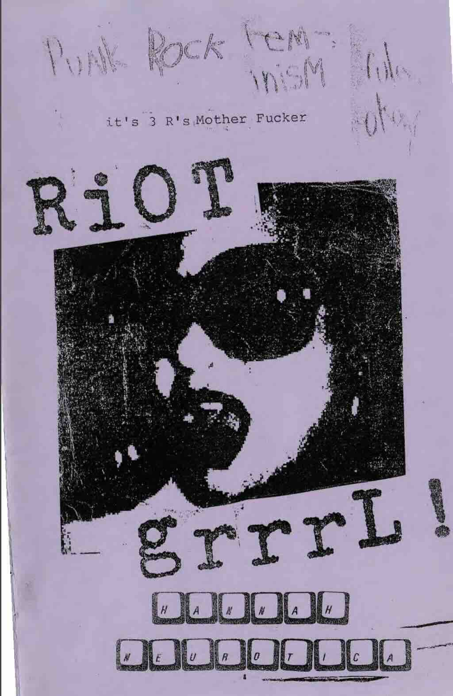
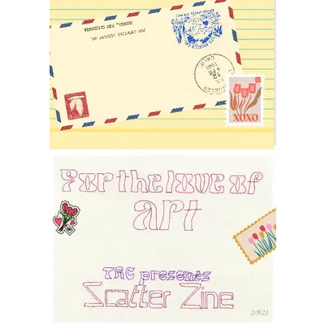
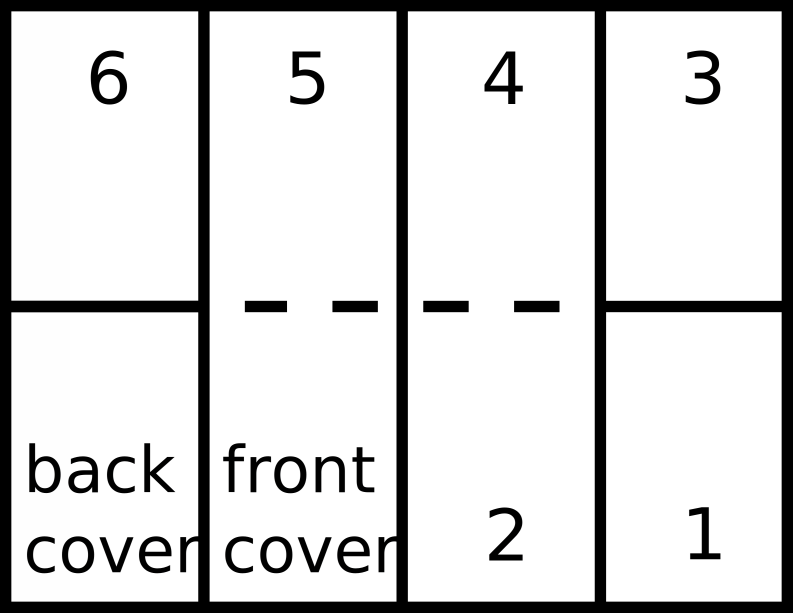

Laboratory Lectures
GEOS 3410
Vostok Ice Core
Vostok Ice Core

420 ky core collected in the 1990s
Interpreting Vostok ice core data
| # | Suggested Team Name | Compare δD to… |
|---|---|---|
| 1 | Feisty Forams | Benthic δ18O |
| 2 | Loess Lovers | Ice core dust |
| 3 | Swamp Squad | Ice core CH4 |
| 4 | Carbonic Crew | Ice core CO2 |

Zine Project
What is a zine (zeen
)?
- DIY, low tech, inexpensively produced
- Often published and distributed by authors/artists themselves
- Anti-commercial, often rebellious/anti-establishment
- About a wide range of subjects: poetry, politics, music, scifi, fandom …
- Accessible to everyone — free or cheap and readily available
Adapted from slides by Sarah Marcella Parella
Pamphleteering could be considered an early form of zinemaking


Adapted from slides by Sarah Marcella Parella
Zines started in the early/mid 20th century as fanzines
The Reign of the Superman
January 1933 by Jerry Siegel and Joe Shuster
The Comet
Chicago in 1930 by Raymond Arthur Palmer and the Science Correspondence Club
Adapted from slides by Sarah Marcella Parella
Zines exploded with Punk in the 1970s


Adapted from slides by Sarah Marcella Parella
Activist zines took off with feminist zines and continue with other activist movements



Adapted from slides by Sarah Marcella Parella
Folks make zines about EVERYTHING from humor to politics to science!


Adapted from slides by Sarah Marcella Parella
Folding a 6-page fold-up zine
Assignment
Design and create a 6-page zine describing an aspect of Earth's climate system, climate history, and/or climate science techniques.
Create an accessible, digestible mini-publication to breakdown and explain a complex issue to a non-scientist.
Due: 5pm | December 6
Format
- Front cover — title and author name(s)
- Interior pages (6) —scientific content in text, images, and diagrams
- Back cover — references for all images and literature
- (Optional) a large image, diagram, or map within folds
Content
You have a lot of flexibility for your zine topic, but I expect you to engage with it at a depth and level appropriate to this class …
…If you have are unsure if your topic will satisfy the requirements of the project, I am more than happy to discuss during drop-in hours or provide feedback on a topic proposal
References
Your zine must incorporate at least three (≥3) primary resources. These must be reputable sources that adhere to the publishing practices of their fields (e.g. peer-review for scientific articles).
Abbreviated reference style
AuthorName(+), Year. Abbreviated Publication, doi:...
Edwards+ 2022. Sci Adv, doi:10.1126/sciadv.abp9329
Edwards+ 2022. Sci Adv, doi:10.1126/sciadv.abp9329
Collaboration
You may work with a partner if you choose.
If you work with a partner, please include a brief “Author Contributions” section either on the back cover of your zine or as a supplemental document.
Proposal
A short (<150 word) description of your zine idea. I will make every effort to provide feedback on your proposal within 72 hours.
Due: 11:59 pm 20 Nov
Many ways to make a zine!

Some rad zine resources for help/inspiration
Art Cart in Coates Library


San Antonio Zine Fest
December 9
10am – 4:30 pm
Central Library
600 Soledad St, San Antonio, TX 78205SanAntoZineFest.com